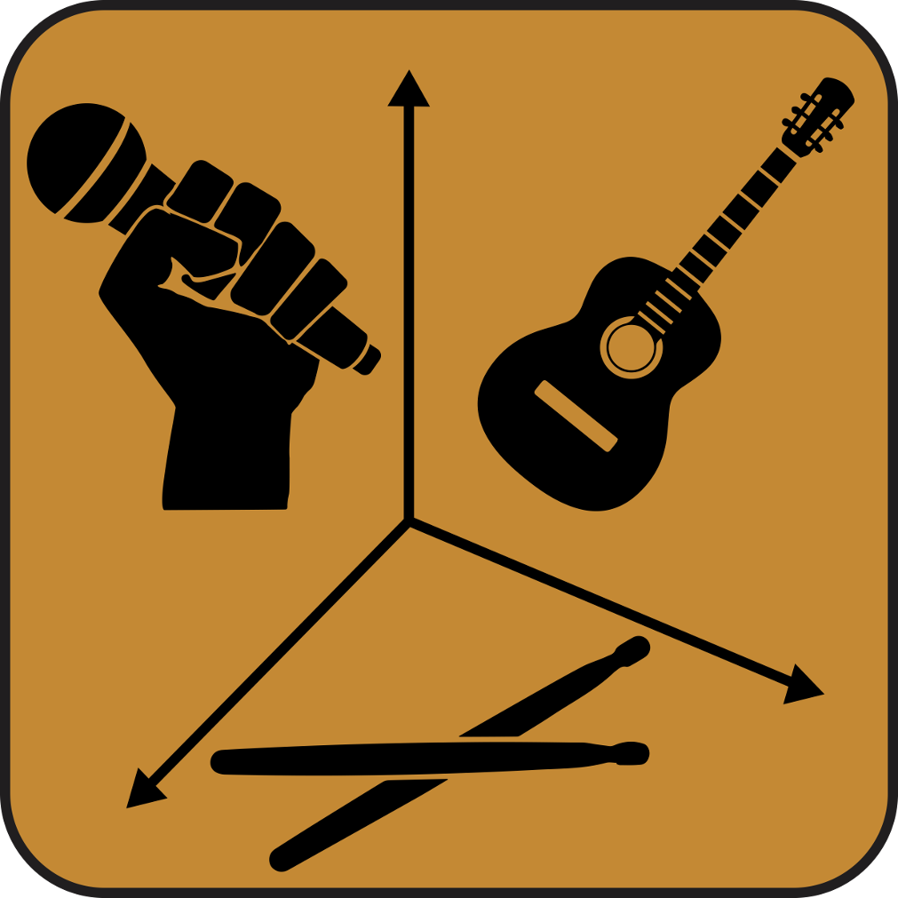

<template>
  <div class="page-content">
    <div style="padding:10px; max-width:800px; margin:auto">
      <h5 style="text-align:center; margin:10px"><strong>Street Corner to Rock-Star (<a href="https://fromstreetcorner2rockstar.herokuapp.com">SC2RS</a>)</strong></h5>
      <div style="text-align:center;margin-bottom:10px;">
        
      </div>
      <p>Street Corner to Rockstar (SC2RS) is a tool for venues to book bands.
        This is a web-based application intended to provide bands with gigs because it makes it easy for venues to book the bands who have subscribed to this app.
      </p>
      <ui>
        <li>It provides a secure authentication mechanism for creating user accounts, logging in/out with password encryption.</li>
        <li>It provides the venue manager with a listing of available bands with filtering options</li>
        <li>It provides a way to create bands and venues to match criteria for booking gig</li>
      </ui>
      <p style="text-align:center; font-weight:bold; margin-top:20px">Purpose</p>
      <p>
        The basic purpose of this application is to make it easy for bands to get gigs and venues to book bands.
        It is important to understand the long term user for this application. Typically, the venue manager is extremely busy and overly solicited by musical acts.
        They are rarely seeking another booking for their venue/ or they are indifferent to having a musical act (coffee shops).
        Often times, they just keep booking the same bands so that they don’t have to bother with booking new bands.
      </p>
      <p>
        Band managers, on the other hand, are trying to aggressively book their bands at venues.
        In the long run, bands are going to be more often using this SC2RS app to find ways to promote, book, and improve their bands standing in the community.
      </p>
      <p>
        Fans of bands enjoy going to different venues to support their favorite acts.
        Fans of venues enjoy hearing different bands and not always the same old “house band”.
      </p>
      <p>
        More information is available in our
        <a href="https://drive.google.com/file/d/0B3XmLSSHvCS7RXRXN0FUOUFtbTg/view?usp=sharing">
          Fact Sheet</a>.
      </p>
      <p>
        <i>
          <strong>Note</strong> This app currently only runs on Chrome browser. Open source contributers are welcome. Contact me at
          <a href="mailto:joshua.v.sherman@gmail.com">joshua.v.sherman@gmail.com</a>
          for details
        </i>
      </p>
    </div>
  </div>
</template>
